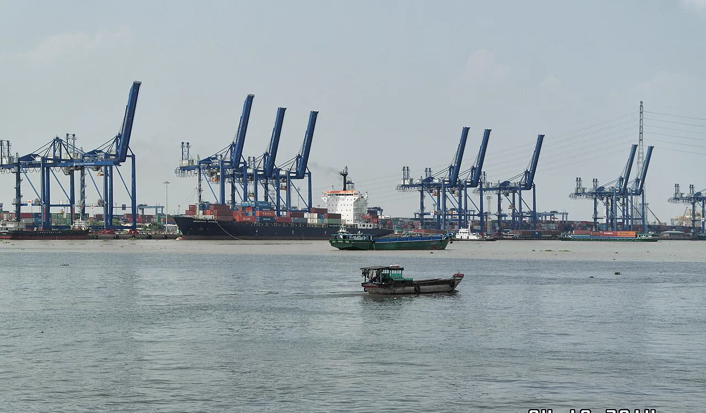

FDA cập nhật cảnh báo về Salmonella trong thủy sản
Import Alert 16-81 liệt kê các cơ sở và sản phẩm thủy sản thuộc diện có thể bị giữ hàng mà không kiểm tra thực tế. Tra danh sách để biết phạm vi áp dụng.
FDA · Hoa KỳRà soát hồ sơ thực phẩm trước khi xuất sang Hoa Kỳ. Đối chiếu dữ liệu FDA, xem điểm rà soát và biết việc cần xử lý trước khi gửi hàng.

Tin chọn lọc đến · Hoa Kỳ và Việt Nam
Import Alert 16-81 liệt kê các cơ sở và sản phẩm thủy sản thuộc diện có thể bị giữ hàng mà không kiểm tra thực tế. Tra danh sách để biết phạm vi áp dụng.
FDA · Hoa KỳCảnh báo nêu các trường hợp thực phẩm nhập khẩu có dấu hiệu ghi nhãn sai và danh sách cơ sở, sản phẩm liên quan.
FDA · Hoa KỳBản tin theo dõi diễn biến giá và thị trường theo từng nhóm hàng, trong đó có tôm, hạt tiêu và sắn.
Bộ Công Thương · Việt NamBộ Công Thương tóm tắt kết luận POR20 đối với tôm nước ấm đông lạnh và thông tin áp dụng theo từng doanh nghiệp.
Bộ Công Thương · Việt Nam → Hoa KỳChọn một bước để xem cách PRECHECK hỗ trợ rà soát.
Nhập tên sản phẩm, thị trường và cơ sở sản xuất. Có thể bổ sung thành phần, mã HS hoặc tệp mẫu nếu có.
Tập mẫu được nhóm chuẩn hóa từ dữ liệu FDA Import Refusals. Tra nguồn gốc để kiểm tra chi tiết.
Mỗi báo cáo rà soát một sản phẩm tại một thị trường. Bản thử nghiệm chưa thu phí.
199.000 đ / báo cáo
Dữ liệu FDA lịch sử, checklist, hướng dẫn hành động và mô phỏng chi phí.
Chọn gói theo lượt499.000 đ / tháng
Tối đa 3 báo cáo mỗi tháng, kèm lịch sử tra cứu và theo dõi thủ công.
Xem gói SMETra cứu yêu cầu và cảnh báo trực tiếp tại cơ quan công bố.
FDA Import Refusals FDA · Hướng dẫn nhập khẩu thực phẩm EC · Hệ thống cảnh báo RASFF Maersk · Thông tin nhập khẩu Hoa KỳXác định loại sản phẩm, cách chế biến và bảo quản. Cùng nhà nhập khẩu rà yêu cầu về cơ sở sản xuất, nhãn và chương trình xác minh áp dụng. Trước khi gửi hàng, thống nhất với broker về Prior Notice và thủ tục CBP theo tuyến vận chuyển.
Ứng dụng dùng dữ liệu lịch sử FDA Import Refusals về thực phẩm từ 10/2021 đến 23/10/2026. Các Import Alert trong bản tin là nguồn tra cứu bổ sung.
Luồng rà soát hỗ trợ thực phẩm xuất sang Hoa Kỳ. Với EU, bạn có thể mở nguồn RASFF ở trang này để tra cứu.
Dùng kết quả để ưu tiên các việc cần kiểm tra. Hãy xác nhận yêu cầu với nguồn chính thức, đơn vị kiểm nghiệm hoặc chuyên gia phù hợp trước khi gửi hàng.
Bản thử nghiệm hiện cung cấp trợ lý tra cứu trong ứng dụng. Tư vấn chuyên gia là dịch vụ riêng.